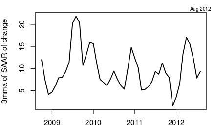
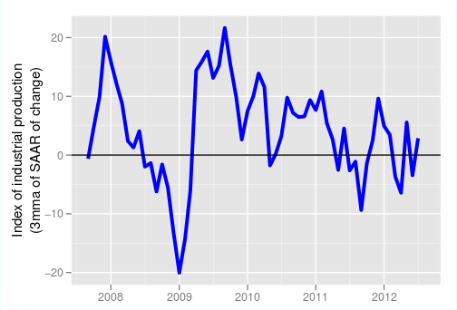
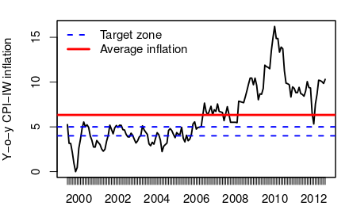
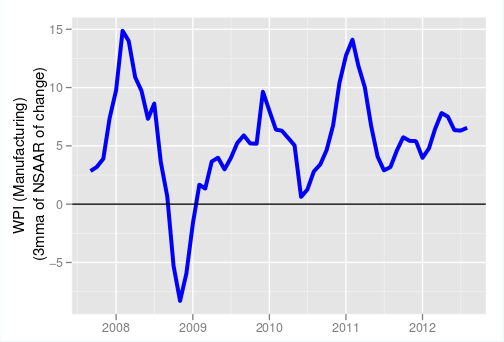
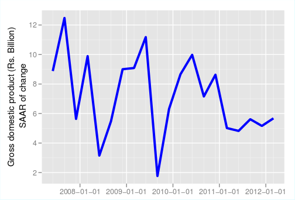

Policy easing won't lift investment
Financial Express, 24th October 2012
India is facing the prospect of stagflation. Output growth has slowed down sharply, and is below the recent long-run average of around 7% and consumer price inflation seems to be stuck at around 9-10% (see graphs).
   What should RBI's stance be in the forthcoming monetary policy meeting? Under the current circumstances, perhaps the best contribution RBI can make to India's long-term growth is not to give in to the pressure for cutting interest rates, and steadfastly hang in there till inflationary expectations come down. This may happen a few quarters after consumer price inflation rates actually come down. If it moves now, this may not happen.
There is an increasing clamour for RBI to cut interest rates. The government has announced a series of reform measures as well as steps to cut the fiscal deficit such as cutting subsidies on diesel and LPG. Additional plans for disinvestment have been announced. With these and better tax administration, the government hopes to reduce the fiscal deficit. RBI has been making the case that the government needs to bring the fiscal deficit under control for inflation to come down. With the present expansionary fiscal policy, RBI would need to keep monetary policy tight to keep inflation under control. The government is now suggesting that it is doing its bit to control the deficit, so RBI must now ease monetary policy to kick-start investment and push up growth.
RBI Governor Subbarao has a difficult call to make. Considering that inflation has remained high and above RBI's target rate of 4-5% for multiple years now, inflationary expectations have remained high. An easing of monetary policy at this stage will convey that a higher inflation rate is acceptable. This will keep inflation rates high as price setting, salary negotiations and contracts for the coming year will build in the higher inflation rate.
 The biggest problem with the investment rate today is issues of government policy and implementation. Projects are stalled largely due to environment and forest clearances, availability of ores and minerals, which has become difficult due to mining bans or other processes that are under litigation or investigation, the difficulties of land acquisition, and the availability of power and water. The government is now setting up a National Investment Board that is expected to give clearances to all projects that cost R1,000 crore or more. Only when projects that are currently stalled due to these problems, bank loans that are being restructured due to these delays and investor sentiment that has been dampened due to the inability of investors to complete their projects on time, start moving ahead, will the private sector have the appetite to take any further risks.
While interest cost is obviously a component of any project, even if interest cost were zero, until the risk of putting equity money into projects can be justified by an expected positive return, many investors are not going to invest more money. Since projects do not run fully on loans, and the risks today posed by the governance problems are so serious, cutting rates will do little to ramp up investment
In most public debates, there is rarely a lobby for raising interest rates. In general, industry lobbies who talk to media persons, investment advisors and equity market analysts almost always argue the case for rate cuts. They stand to gain from rate cuts and the loud clamour created by them ignores the potential negative impact of the policies they are arguing in favour of. In this case, interest rates are the price being paid by some to others. So there are two sides to the story. Those who lend, i.e the savers, are also impacted by rate cuts. The household savings rate has dropped sharply in one year from 25.4% of GDP in 2010-11 to 22.8% of GDP in 2011-12. Such a sharp and sudden fall in household savings should be a matter of concern. Where did this decline come from and why did it happen? What would be the impact of an interest rate cut on household savings? 
This decline in household savings of 2.6% of GDP has come mainly from a sudden and sharp decline in household financial savings. In 2010-11, household financial savings stood at 12.9% of GDP, while in the following year they fell by 2.9% to 10% of GDP. Why did this happen?
The year 2011-12 saw a decline in the growth of bank deposits and small savings. Households prefer to save in real estate and gold. Physical savings of households continued to be high, and even rose slightly, from 12.4% of GDP in 2010-11 to 12.8% of GDP in 2011-12. The bulk of the increase in savings seem to have gone to gold. Last year, gold imports rose dramatically. After the hike in the tariff on gold in the budget, official imports of gold have fallen. Stories from travellers suggest that customs officials in Mumbai are actively trying to prevent gold smuggling in recent months.
World commodity prices are expected to remain depressed as the world economy remains sluggish. The rupee appreciation in recent months has helped reduce the costs of tradables. The slowdown in domestic demand will help stabilise domestic prices. When fiscal policy measures actually have an effect and the deficit comes down, the domestic pressure on prices will reduce. RBI should be in no hurry to ease monetary policy as it can do more harm than good.
Back up to Ila Patnaik's media page
Back up to Ila Patnaik's home page